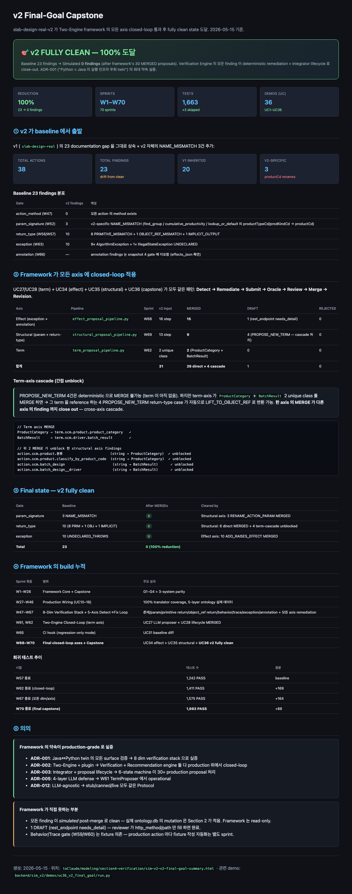
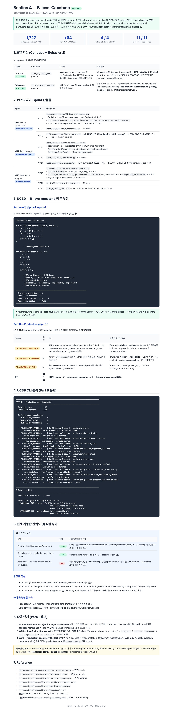
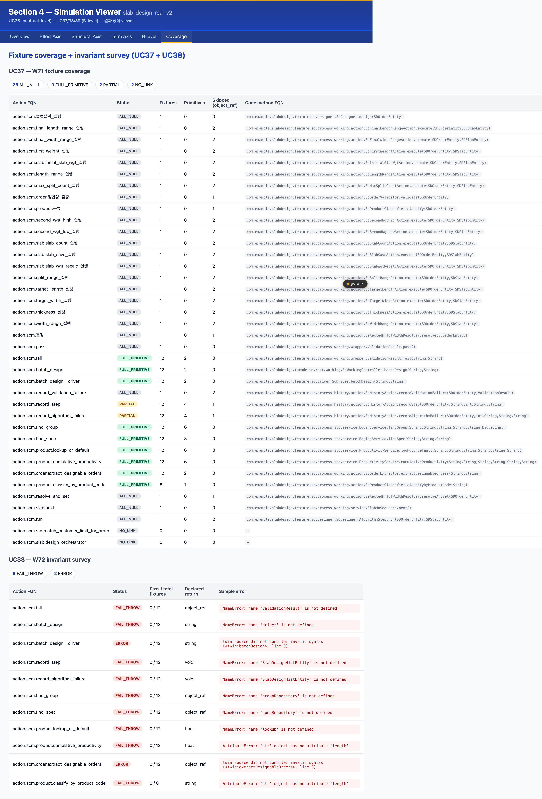
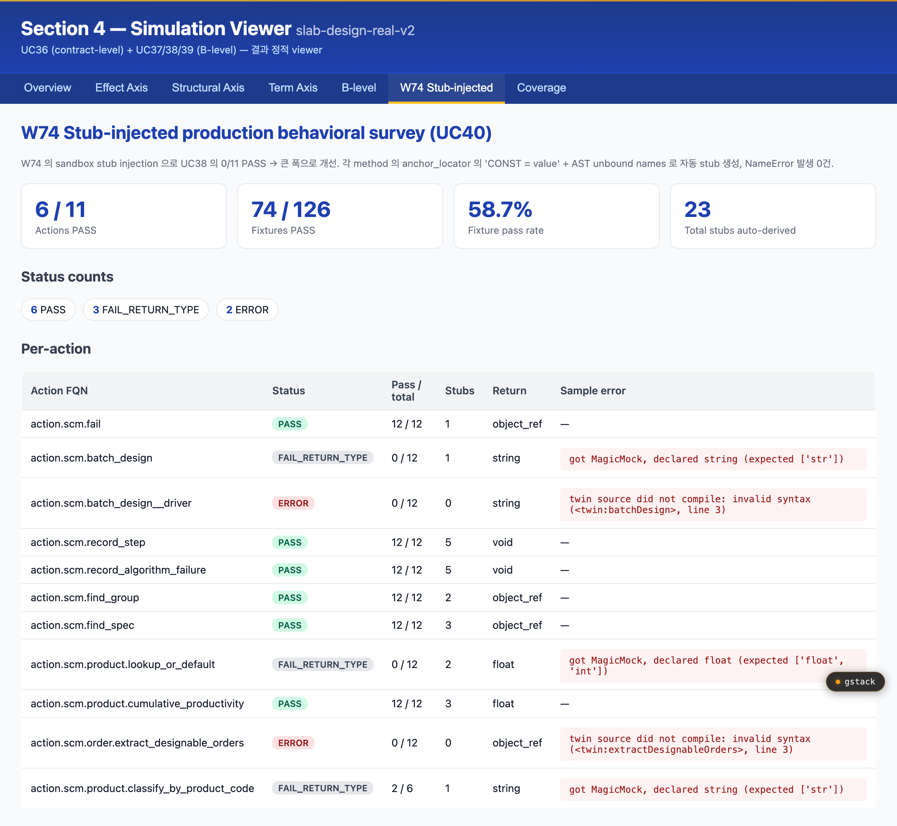

Section 4 (sim_v2) 는 contract-level capstone (UC36) 으로 v2 의 모든 verification finding 23 건을 0 으로 자동 reduce 하는 데 도달. B-level capstone (UC39) 으로 behavioral fidelity pipeline (W71→W73→W59) 의 정상 작동을 합성 케이스 4/4 로 증명. 이어서 W74 stub injection 과 W75 idiom rewrite 을 추가 구현하여 production 의 실제 behavioral 검증 (UC40) 0/11 → 6/11 PASS, 74/126 fixture (58.7%) 까지 끌어올림.
Action.params_json (38 actions on slab-design-real-v2)
↓
[W71] synthesize_fixtures_for_action primitive boundary value seeds (cap 12)
├─ string ("", "x", "y", "0", "-1", "테스트")
├─ int (0, 1, -1, MAX, MIN)
├─ decimal (Decimal("0"), Decimal("1"), Decimal("-1"), Decimal("0.5"))
└─ object_ref → None placeholder
↓
[W73] attach_baselines (action, args) → expected_output 부착
├─ manual annotation
├─ recorded JVM trace (future W76)
└─ derived from anchor_locator (Section 3 prototype)
↓
[W59] BehaviorTwinRunner safe exec + Java baseline diff
├─ status: PASS / FAIL_OUTPUT / FAIL_TRACE / ERROR
└─ tolerance: numeric / structural
↓ (or, baseline-free)
[W72] TwinInvariantRunner 3 invariant 검증
├─ determinism (같은 입력 → 같은 출력)
├─ no unexpected throw
└─ return-type matches declared
이 파이프라인이 Section 3 의 sandbox 가 LLM 합성 + subprocess 실행 + ok=true 응답으로 끝나던 흐름을 결정적 fixture + Java baseline 비교 + 구조 invariant 까지 확장.




자세히는 gap-analysis.md 참조.
여기서는 우선순위 매트릭스만:
| # | Section 3 한계 | sim_v2 해결도 | 즉시 적용 가능? |
|---|---|---|---|
| #1 | chat [LOW] fallback | W72 + W73 부착 | ✓ recipe-2/3 그대로 |
| #2 | 한국어 검색 | W77 ✓ CLOSED | ✓ korean_term_resolver.py 그대로 |
| #3 | expected 검증 없음 | W73 + W59 | ✓ recipe-2 그대로 |
| #4 | anchor prelude 단발 | W74 ✓ CLOSED | ✓ sandbox_stubs.py 그대로 |
| #5 | Java idiom 일부만 변환 | W75 ✓ CLOSED | ✓ idiom_rewriter.py 그대로 |
| #6 | action.output null 55% | W58 + UC23 | ✓ sim_v2 추천 표시 |
| #7 | Neo4j Class/Method=0 | 양쪽 동일 legacy | ✓ view 통합 |
| #8 | closed-loop fix 없음 | 5축 lifecycle | ✓ pipeline wire |
Java→Python transpiler 가 두 곳에 분리 존재:
| Section 3 | sim_v2 (Section 4) | |
|---|---|---|
| 경로 | backend/section3/transpiler.py |
backend/sim_v2/core/synthesizer/java_translator.py |
| 라인 수 | 수백 (추정) | 1,425 lines |
| 핸들러 함수 | (미공개) | 71 _translate_* |
| 출력 | Python source 1 string | TranslationResult(python_source, imports_needed, notes, signature_locked) |
| 호출 측 | sandbox subprocess (1 case) | BehaviorTwinRunner (in-process safe exec, multi-fixture) |
cumulativeProductivity → 0.95). anchor_locator →
module-level prelude prepend (W74 prototype).
this.field FQN resolution.
sim_v2 JavaToPythonTranslator 를 subclass 하여 Java String / Collection
idiom 만 patch:
class Section3Translator(JavaToPythonTranslator):
_IDIOM_REWRITES = {
("String", "length"): lambda obj, args: f"len({obj})",
("String", "charAt"): lambda obj, args: f"{obj}[{args[0]}]",
("String", "isEmpty"): lambda obj, args: f"(not {obj})",
("String", "equals"): lambda obj, args: f"({obj} == {args[0]})",
("String", "substring"): lambda obj, args: f"{obj}[{args[0]}:{args[1] if len(args)>1 else ''}]",
("List", "size"): lambda obj, args: f"len({obj})",
("Map", "containsKey"):lambda obj, args: f"({args[0]} in {obj})",
}
def _translate_method_invocation(self, node, *, indent):
# 1) detect (receiver_type, method_name)
# 2) if in self._IDIOM_REWRITES → use rewrite
# 3) else fall back to super().
...
71 handler 모두 상속. Java idiom 만 patch. UC39 의 ATTRERROR 2건 동시 해결. Section 3 transpiler.py 코드 라인 ~70% 감소 예상.
자세히는 transpiler-bridge.md 참조.
각 recipe 는 stand-alone Python script. .venv/bin/python <path>
로 즉시 실행 + 결과 확인 가능.
action.scm.fail 의 params_json (2 string) → 12 fixtures 자동 생성.
('') ('x') ('y') ('0') ('-1') ('테스트') 6 boundary × 2 param.
addPositives(int, int) 4 case 에 JavaBaselineMap 으로
expected 3/5/0/8 부착. BehaviorTwinRunner 실행 → 4/4 behavioral PASS.
sandbox_agent.py 에
통합. sandbox 결과 표에 expected 컬럼 추가. 첫 단계로
cumulativeProductivity → 0.95 baseline 1건만 검증.
transpiler.py 를 JavaToPythonTranslator
subclass 로 재작성. Java String idiom (length/charAt/substring/equals/isEmpty/size) 만
명시 patch. sim_v2 의 71-handler 모두 자동 획득.
UC39 의 ATTRERROR 2건 동시 해결.
README.md — navigation hub + "막힌 곳별" 빠른 안내gap-analysis.md — Section 3 8 한계 → sim_v2 1:1 매핑transpiler-bridge.md — transpiler 규칙별 매핑api-reference/W59-behavior-twin-runner.mdapi-reference/W71-fixture-synthesizer.mdapi-reference/W72-twin-invariants.mdapi-reference/W73-java-oracle-adapter.mdusage-recipes/recipe-1-replace-llm-test-synthesis.pyusage-recipes/recipe-2-record-java-baseline.pyusage-recipes/recipe-3-run-invariant-survey.pytoClaude/modeling/section4-verification/b-level-capstone-summary.html — UC39 capstone HTMLtoClaude/modeling/section4-verification/sim-v2-v2-final-goal-summary.html — UC36 capstone HTMLtoClaude/modeling/section4-verification/simulation-viewer.html — interactive 6-tab viewer (UC36/37/38/39)section3_landing/README.md — Section 3 자체 보고서 (read-only)backend/sim_v2/core/synthesizer/java_translator.py — 1,425 line, 71 handlerbackend/sim_v2/core/verification/behavior_twin_runner.py — W59 in-process safe execbackend/sim_v2/core/verification/fixture_synthesizer.py — W71 boundary fixturebackend/sim_v2/core/verification/twin_invariants.py — W72 baseline-freebackend/sim_v2/core/verification/java_oracle_adapter.py — W73 baseline mapbackend/sim_v2/demos/uc36_v2_final_goal/run.py — contract-level capstonebackend/sim_v2/demos/uc39_b_level_capstone/run.py — B-level capstone